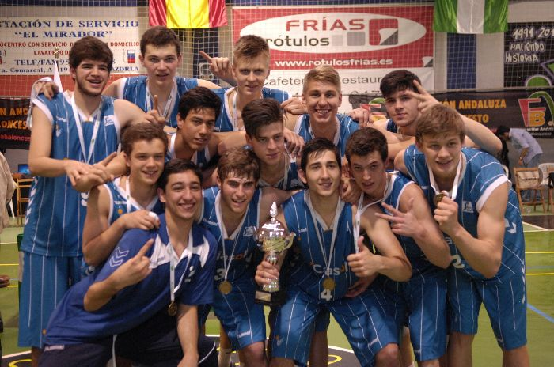

Lunes, 22 de Abril de 2013 10:22 Laura Fernández @LauraFS4
Finaliza el Campeonato de Andalucía júnior masculino con una apasionante jornada final en la que sus dos encuentros, la final y el tercer y cuarto puesto, se resolvió tras una prórroga y por tan solo dos puntos de diferencia.
El conjunto sevillano de Cajasol se proclamó ayer Campeón de Andalucía Júnior Masculino 2013, al derrotar al conjunto de Unicaja y tras una prórroga por (72 - 74) en la gran final del Campeonato de Andalucía finalizado en la mañana de ayer y celebrado durante toda la semana en las localidades jienenses de Cazorla y Peal de Becerro.

Tras una primera parte en la que el conjunto de Unicaja dominó en el marcador para irse al descanso con 11 puntos de ventaja (42 – 31), el partido cambió de rumbo tras el paso por los vestuarios con un Cajasol, que comenzó poco a poco a remontar para llegar al final del tercer periodo tan solo uno abajo (55 – 54) y con todo por decidir en los últimos 10 minutos. Durante este último periodo el marcador se mantuvo muy igualado y un menor acierto en el tiro por parte de ambos conjuntos les llevó al final del encuentro con empate a 64 puntos, siendo necesario un tiempo extra de 5 minutos en el que de nuevo la igualdad fue la tónica dominante pero donde finalmente el equipo de Cajasol algo más acertado, se llevó el encuentro y el título de campeón andaluz 2013, por un estrecho margen de dos puntos (70 – 72).
En la lucha por la tercera plaza fantástico partido el que también brindó a todos los aficionados Jaén CB y Club Náutico de Sevilla y que con prórroga incluida se llevó el conjunto sevillano por tan solo dos puntos de diferencia (60 – 62). Con muchas alternativas en el marcador y dos cuartos para cada equipo se desarrolló este intenso partido que en varias ocasiones parecía se iba a romper pero que sin embargo una y otra vez se igualaba y devolvía el equilibrio al marcador, que tan solo se pudo romper tras un periodo extra de 5 minutos y con dos puntos de diferencia. Gran campeonato el realizado por ambos conjuntos, que además otorga al equipo sevillano una plaza en el Campeonato de España.